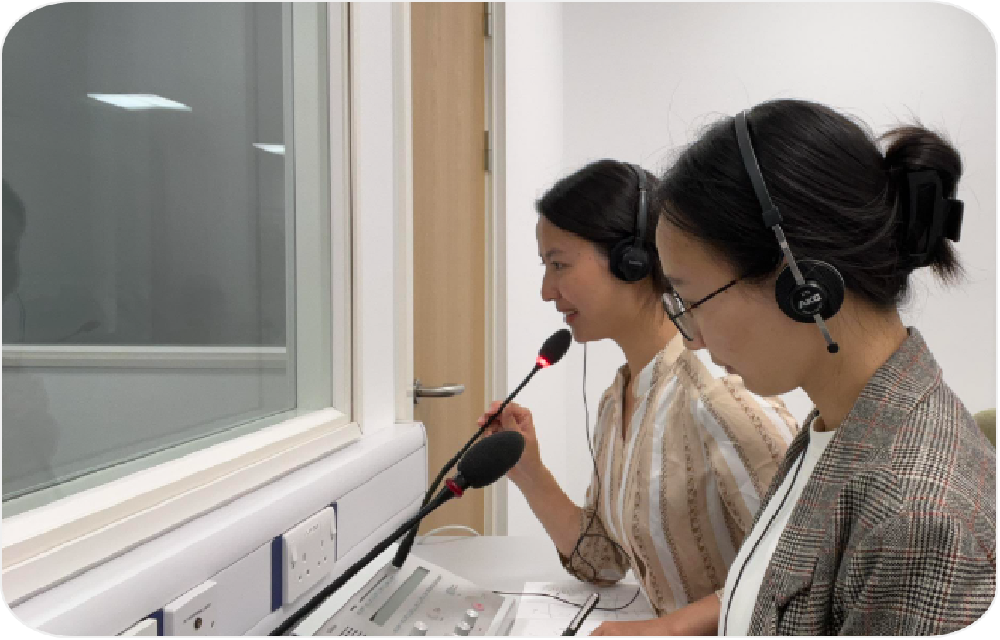
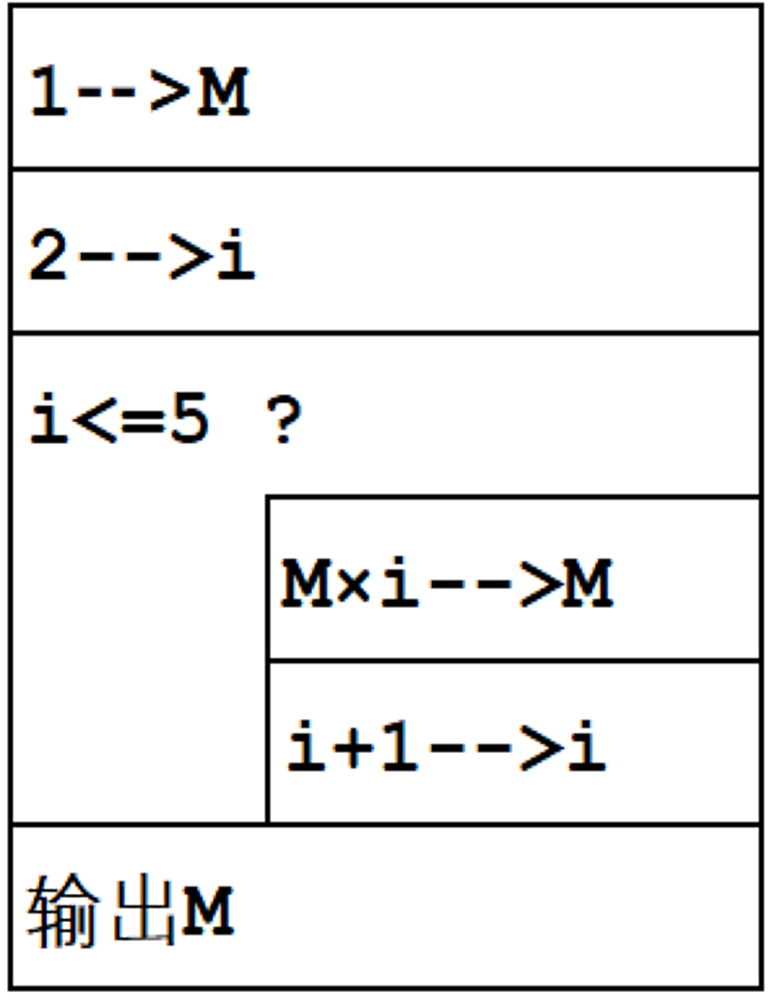
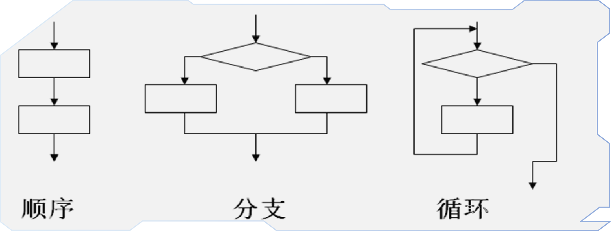

给你 30 秒，认真想一想。
不用回答我，先回答你自己。
· 一道中等难度的编程题
· 学生要抠两节课
· 调 bug、改逻辑、反复运行
· 下课了还在想“为什么不对”
· 同样的题
· 有学生十分钟就交了
· 代码工整，能跑，没毛病
· 叫来一问：“AI 写的。”
C 语言概述
数据类型与运算符
顺序结构程序设计
选择结构程序设计
循环结构程序设计
数组
函数
指针
结构体与文件
1. 平时成绩 50%：考勤及课堂表现10%、单元测验10%、编程练习30%
2. 期中成绩 10%：开卷机试
3. 期末成绩 40%：闭卷机试
· 代码可以讨论，不可以抄袭
· AI 生成的代码必须理解并改写
· 直接复制粘贴提交，按抄袭处理
内存、地址、编译、链接 —— 只有学 C 才能真正理解
C 是 C++、Java、Python 等语言的共同血脉
考研 408、ACM、NOI / NOIP 均以 C / C++ 为主
嵌入式、操作系统、驱动程序都离不开 C
本课程是后续多门专业课的先修课程：计算力学 · 数据结构与算法设计 · 机器学习 · 计算物理 · 单片机及嵌入式系统原理 ……
· 写代码、查语法
· 生成框架、生成注释
· 解释报错、给修复建议
· 判断代码对不对
· 把问题拆成可执行步骤
· 理解内存、类型、边界
· 学 C 的核心目的不是“写代码”，而是理解计算机怎么工作
· 编程模式变了：从“自己写每一行”变成“提出需求 → 审查 AI 代码 → 整合与验证”。
变量存在哪里？指针是什么？
为什么会有内存泄漏？
→ 你能看懂崩溃
出了 bug，
你知道它为什么崩，
而不是只会重开一次。
一行代码如何变成机器动作？
程序是怎么跑起来的？
→ 你能判断对错
AI 给的代码能跑，
但不一定对。
你看得出来哪里有问题。
每一行代码的代价看得见，
没有黑箱，没有魔法。
→ 你能问出好问题
知道该问什么、
该加什么约束，
AI 才会给你好东西。
| 工具 | 替代了 | 没替代 |
|---|---|---|
| 计算器 | 手算 | 数学理解 |
| GPS 导航 | 认路 | 方向感与应急判断 |
| 翻译软件 | 字面翻译 | 语境与文化判断 |
| 搜索引擎 | 记忆答案 | 提问与评估 |
| AI | 写代码 | 计算思维与工程判断 |
解释代码、 分析报错、 给出思路
生成框架、 自己重写、 逐行验证
直接复制、 放弃思考、 他人代写
| 内容 | 常见错误 | 你该能判断 |
|---|---|---|
| 进制与位运算 | 位掩码写反 | 看懂 0xFF & 0x0F |
| 编码 | 中文乱码、字节数错 | 区分 ASCII / GBK / UTF-8 |
| 有符号 / 无符号 | 比较反直觉 | 识别补码陷阱 |
| 浮点数 | 用 == 直接比较 | 知道 0.1+0.2 ≠ 0.3 |
| 编译链接 | 头文件顺序错 | 看懂编译报错 |
先自己写，卡住了再问 AI。
成长发生在你头皮发麻的那半小时里。
描述越具体，约束越明确，
AI 给的代码质量差别越大。
AI 给的代码，
你得看得懂、能验证、敢改动。
❌ 模糊的问法
“帮我写个排序”
✅ 具体的问法
“数据量十万条，需要稳定排序，
请说明时间复杂度和空间复杂度，
用 C 语言实现，并处理输入为空的情况。”
贝尔实验室，Dennis Ritchie 为编写 UNIX 而设计
ANSI / ISO C 标准，保证可移植性与兼容性
在 C 基础上加入面向对象特性
C89 / C90、C99、C11、C17 / C23
编译后接近机器码，运行速度快
完全手动管理内存，可精细控制每一字节
直接操作硬件与内存地址，操作系统首选
一次编写，稍作修改即可跨平台重新编译
| 对比维度 | C 语言 | Python | Java |
|---|---|---|---|
| 执行效率 | ★★★★★ | ★★☆☆☆ | ★★★☆☆ |
| 内存控制 | 完全手动 | 自动管理 | 自动管理 |
| 系统级编程 | 直接操作硬件 | 受限 | 受限 |
| 主要应用 | 系统 / 嵌入式 | AI / Web | 企业级应用 |
C 语言处在中间位置，兼顾开发效率和运行效率。
“越往上越好写”: 越接近自然语言, 写程序时不用关心计算机硬件的细节，代码短、可读性好、开发效率高。
“越往下效率越高”: 越接近计算机硬件本身，执行时需要的翻译步骤越少，运行速度越快、占用的内存和资源越少。
· 二进制代码表示的机器指令集合
· 计算机唯一能直接识别和执行的语言
· 不同型号计算机的机器语言互不相通
· 用符号表示指令的低级语言，也称符号语言
· 与特定机器语言指令集一一对应
· 不同平台之间不可直接移植
· 以人类的日常语言为基础
· 少量改动即可跨体系结构运行
· 写出的程序称为源程序，C 源程序以 .c 结尾
一边翻译，一边运行。
· 不生成独立的目标文件
· 每次运行都依赖解释器
· 便于调试，但执行效率相对较低

翻译完成，再运行。
· 翻译后形成 .obj 目标文件
· 链接后形成 .exe 可执行文件
· 执行效率高，但需要先完成编译链接
.c → 目标文件 .obj → 可执行文件 .exe。
计算机内部只有 0 和 1。不同进制只是同一数值的不同写法。
| 数制 | 基数 | 数码 | C 语言写法 |
|---|---|---|---|
| 二进制 | 2 | 0、1 | 0b1101 |
| 八进制 | 8 | 0 ~ 7 | 015 |
| 十进制 | 10 | 0 ~ 9 | 13 |
| 十六进制 | 16 | 0 ~ 9、A ~ F | 0x0D |
// AI 生成的代码里，你经常看到这种写法： flags = flags | 0x80; // 把最高位设为 1 data = (data >> 4) & 0x0F; // 取高 4 位
0x7fff...、位运算 0xFF & 0x0F、AI 代码里的位操作，都靠它。
字符在计算机里本质是整数。编码，就是字符与整数的映射规则。
American Standard Code for Information Interchange
美国信息交换标准代码
1 个字符 = 1 字节
Guobiao Kuozhan / 汉字内码扩展规范
中国国家标准，主要面向中文，兼容 ASCII
1 个汉字 = 2 字节
8-bit Unicode Transformation Format
8 位 Unicode 转换格式，面向全球所有语言
1 个常用汉字 = 3 字节
为什么用补码？统一加减法，消除负零。但也带来了经典陷阱。
int a = -1; unsigned int b = 1; if (a < b) { /* 你以为会进，其实不会 */ }
-1 在内存里是 0xFFFFFFFF；和 unsigned 比较时被当成巨大正数，结果 -1 > 1
signed / unsigned 混用立刻警觉；让 AI 解释类型转换；自己写一遍亲手验证
0.1 + 0.2 ≠ 0.3
float sum = 0; for (int i = 0; i < 10; i++) sum += 0.1; printf("%.10f\n", sum); // 0.9999999404
0.1 在二进制里是无限循环小数，存储时被截断产生误差
不要用 == 比较浮点数；用 fabs(a-b) < 1e-6
英文释义：An algorithm is a step by step process used to carry out some function.
衡量算法执行时间随问题规模增长的变化趋势
衡量算法运行所需存储空间随问题规模增长的变化趋势
| 特性 | 含义 |
|---|---|
| 有穷性 | 执行有限步后结束，不能无限循环 |
| 确定性 | 每一步含义明确无歧义 |
| 有效性 | 每一步都能有效执行，无死语句 |
| 有输入 | 可以有 0 个或多个输入 |
| 有输出 | 至少有 1 个输出，否则无效 |
用日常语言描述步骤，易读但容易产生歧义
用图形符号表示，直观清晰，适合展示流程
去掉流程线，矩形框嵌套，结构更紧凑
介于自然语言与程序语言之间，便于转换
计算 1*2 得 2
2*3 得 6
6*4 得 24
24*5 得 120
(1) 设定变量 M，M 置初值为 1；设定变量 i，置初值为 2。
(2) 如果 i 的值小于 6，则执行 (3)；否则执行 (4)。
(3) 将 M 乘以 i 并置于 M 中存放；将 i 中的值加 1 并置于 i 中存放。再执行 (2)。
(4) 将 M 中的值输出。

// 求 5!
(1) M = 1
(2) i = 2
(3) while i <= 5
(4) M * i → M
(5) i + 1 → i
(6) end while
(7) print M
图形符号是工程交流的通用语言
能把思路画出来，才说明你想清楚了
阅读代码、调试程序、团队协作都离不开它
先用自然语言把每一步讲明白
再请 AI 画出流程图，你逐框核对
AI 的图和你的思路对不上，多半是你没讲清楚
语句按书写顺序依次执行
A → B → C
条件成立走 A，不成立走 B
若 P 则 A，否则 B
条件满足时反复执行 A
直到条件不再满足

| IDE | 是否带 AI 辅助 | AI 能做什么 |
|---|---|---|
| Dev-C++ | 无内置 | 需借助外接工具（如通义灵码网页版） |
| Code::Blocks | 无内置 | 需借助插件或外接 AI 工具 |
| VS Code | 可装插件 （Copilot、通义灵码） |
代码补全、错误提示、生成注释、解释代码、按注释生成代码片段 |
| Visual Studio | 内置 IntelliCode | 智能补全、常见错误提示、代码建议 |
| CLion （JetBrains） |
内置 AI Assistant | 代码补全、错误诊断与修订建议、自然语言生成代码、重构建议、生成单元测试 |
/* hello.c 我的第一个 C 程序 */ #include <stdio.h> int main() { printf("Hello world!\n"); return 0; }
| 代码 | 作用 |
|---|---|
/* ... */ | 注释，编译时被忽略 |
#include <stdio.h> | 引入标准输入输出头文件 |
int main() | 主函数，程序从它开始执行 |
{ } | 函数体的开始与结束 |
printf("..."); | 输出函数，行尾要有分号 |
\n | 换行符，光标移到下一行行首 |
return 0; | 返回 0，表示程序正常结束 |
#include <stdio.h> int main() { /* 你的语句写在这里 */ return 0; }
#include <stdio.h>main(); 结束.c/.cpp → 预处理 → 编译 .s → 汇编 .o → 链接 .exe → 运行
| 错误 | 正确 | 原因 |
|---|---|---|
| printf("Hi") | printf("Hi"); | 漏写分号 |
| int mian() | int main() | 函数名拼错 |
| #include <studio.h> | #include <stdio.h> | 头文件名错 |
| printf(“Hi”) | printf("Hi") | 中文全角引号 |
| hello.txt | hello.c | 扩展名错 |
· 每行第 1 列有 1 个空格
· 每个 * 后有 1 个空格
· 行末不能有多余空格
提示：用多个 printf，每行末尾加 \n
diamond.c，再编译运行。Console application,建源文件，先保存为 diamond.c，再编译运行。
#include + main() + return 0
1. 安装 IDE
2. 运行 Hello World
3. 输出“学号 + 姓名 + 我爱 C 语言”
观看“数据表示”配套课件：
进制 · 编码 · 补码 · 浮点数
为什么 0.1 + 0.2 ≠ 0.3？
输出课堂练习的菱形图案
行末不能有多余空格
“我在做 ______，
遇到 ______，
报错信息是 ______，
我已经尝试过 ______。
请帮我分析原因，不要直接给出完整答案。”
下一讲：第 2 章 数据类型与运算符